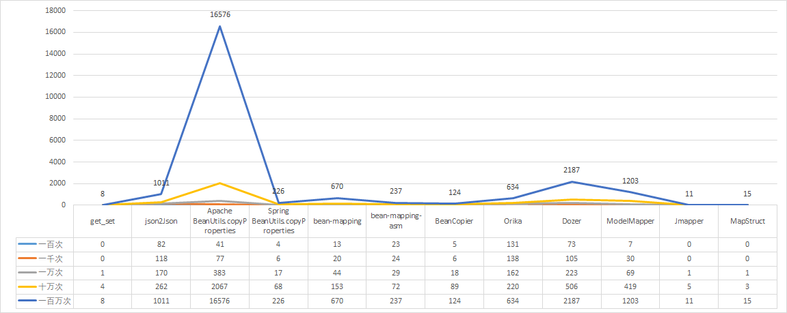

不做无用功
一、背景
- 开发过程中遇到的痛点问题：
- 来源类与目标类字段名不一致，举例具体表现为：将电商报名客户的信息，更新到商机客人时，会出现来源的客户号码属性名为:
customerPhone，而目标的客户号码属性为：phone等等。 - 在某些跨库查询的需求中，需要聚合大家居库以及服务平台库中的两个业务实体的数据，查询并返回某个客户号码的沟通记录，并且要求带上此客户对应的意向潜客信息，即：查询接口返回的 VO 对象，需要返回服务平台的沟通记录，以及大家居系统的意向潜客信息，并且组合起来返回。
- 在生产编码过程中，基于安全原则，我们不能将我们数据库字段毫无保留的所有都返回给接口调用方，会约定相应的返回类以及收参类。
- 来源类与目标类字段名不一致，举例具体表现为：将电商报名客户的信息，更新到商机客人时，会出现来源的客户号码属性名为:
- 因此，在整个过程中，或多或少的，会有属性复制的操作，而在我们项目中，用的较多的是
Apache提供的工具类：org.apache.commons.beanutils.BeanUtils.copyProperties(Object dest, Object orig)方法来复制属性； - 网上有许多公开资料显示，
Apache提供的BeanUtils工具类，存在严重的性能问题，参考图例：
 - 纵坐标是对应操作次数的耗时，横坐标是不同拷贝类属性方法的工具。
- 可以看出最省事的做法就是，将原有的
org.apache.commons.beanutils.BeanUtils.copyProperties替换为org.springframework.beans.BeanUtils.copyProperties，Spring 所提供的BeanUtils工具类。 - 但是执行效率，以及代码可调试性、可读性最高的依然还是原生的
getter/setter方法。
二、MapStruct 之前
- MapStruct 是一款专门用来处理 domain 实体类与 Model 类的属性映射的插件，我们只需要定义 Mapper 接口，MapStruct 就会在编译时自动的实现这个映射接口，避免麻烦复杂的映射实现。
MapStruct is a Java annotation processor for the generation of type-safe and performant mappers for Java bean classes. It saves you from writing mapping code by hand, which is a tedious and error-prone task. The generator comes with sensible defaults and many built-in type conversions, but it steps out of your way when it comes to configuring or implementing special behavior.
- 在编译时 MapStruct 将生成此接口的实现。 生成的实现使用纯 Java 方法调用来映射源对象和目标对象，即不涉及反射。 默认情况下，如果属性在来源类和目标类中具有相同的名称，则它们会被映射，也可以使用 @Mapping 和一些其他注释来自定义映射关系。
三、功能点介绍
对比其他属性映射框架的优势：
- 执行效率高: 使用在编译时生成的原生get/set方法，而不是使用反射的方法来实现；
- 编译时类型安全: 只能映射相互映射的对象和属性；
- 自我完备: 没有外部依赖
- 项目构建时，能够及时报告错误的映射关系。
- 简单且可调试
开发环境要求：
- Java 1.8+
四、项目实践
1. 引入依赖
- 如果是基于 Maven 的项目，在 pom.xml 文件中添加：
1 | ... |
- 如果是基于 Gradle 的项目，则需要在项目的 build.gradle 文件中添加：
1 | plugins { |
2. 示例
(1) 简单的映射关系
- 假设我们有一个来源类：新电商客户——NewCustomer，继承自基类——BaseBO
1 | // BaseBO.java |
1 | // NewCustomer.java |
- 假设我们有一个目标类：虚拟客户VO——VirtualCustomerVO
1 | // VirtualCustomerVO.java |
- 定义映射接口：
1 | // IMapping.java 公共对象映射接口 |
1 | // NewCustomer 与 VirtualCustomerVO 映射关系接口 |
Marks an interface or abstract class as a mapper and activates the generation of a implementation of that type via MapStruct.
@Mapper: 将接口类或抽象类标记为由 MapStruct 来实现的映射类。
- 测试验证：
1 | // NewCustomerServiceTest.java |
- 测试结果
1 | source: |
(2) 不同成员属性名称的映射关系
- 有些时候，有些需求，需要查询几个不同业务库的数据，返回接口调用方，比如说，“客人姓名”字段，在来源类中定义的可能是
customerName，而在目标类中定义的可能是cusName，这种情况在业务需求开发过程中是非常常见的。 - 实现方式：
1 | // NewCustomer 与 VirtualCustomerVO 映射关系接口 |
- 测试验证：
1 | // NewCustomerServiceTest.java |
- 测试结果：
1 | source: { |
(3) 聚合多个来源类到一个目标类中
- 有种情况，目标类的属性由两个不同的来源类组成，这种情况 MapStruct 也能轻松完成；
- 例如我们有一个客户扩展类——NewCustomerExt，里面的属性有 age、sex、address:
1 | // NewCustomerExt.java 客户扩展类 |
- 修改目标类：
1 | // VirtualCustomerVO.java |
- 修改映射接口
1 | (componentModel = "spring", unmappedTargetPolicy = ReportingPolicy.IGNORE, unmappedSourcePolicy = ReportingPolicy.IGNORE) |
- 测试验证
1 | public class NewCustomerServiceTest { |
- 测试结果
1 | source: |
(4) 映射类型格式化
- MapStruct 支持来源类和目标类之间的数据类型转换。它还提供了基本类型及响应的包装类型之间的自动转换。
- 从
int到String的转换:
1 | // 来自官方示例： |
- 从
BigDecimal到String的转换:
1 | // 来自官方示例 |
- 从日期类型到字符串的转换:
1 | // 来自官方示例 |
(5) 集合、Stream映射
- 集合类型的映射与映射 Bean 类型的方式相同，即通过在映射器接口中定义来源类和目标类的映射方法。MapStruct 支持 Java 集合框架中的各种可迭代类型。
- 生成的代码将包含一个循环，该循环遍历来源集合，把每一个元素转换后放入目标集合中。如果在给定的映射器或其使用的映射器中找到集合元素类型的映射方法，则调用此方法来执行元素转换。
- 示例：
1 | // 如果我们的映射器接口是继承自 IMapping.java 接口类的话，可以直接调用方法sourceToTarget() 例如： |
五、总结
- MapStruct 是一个用于创建映射器的库，从基本映射到自定义方法和自定义映射器，此外， 我们还介绍了MapStruct提供的一些高级操作选项，包括依赖注入，数据类型映射和表达式使用。
- 执行效率高，接近原生的 get/set 方法的执行效率；